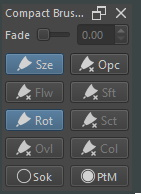

Compact Brush Toggler
This is docker that provides toggle button for 10 different brush properties and a slider for brush fade;
User Interface

Legend
- Sze -> Size Pressure Toggle
- Opc -> Opacity Pressure Toggle
- Flw -> Flow Pressure Toggle
- Sft -> Softness Pressure Toggle
- Rot -> Rotation Pressure Toggle
- Sct -> Scatter Pressure Toggle
- Ovl -> Overlay Mode [Smudge Brush]
- SmL -> Smudge Lenght Toggle
- SmM -> Smudge Mode [Smudge Brush]
- Col -> Color Rate [Smudge Brush]
- Sok -> Soak Ink [Bristles Brush]
- PtM -> Painting Mode
- Fade -> Brush Horizontal Fade Slider
Usage
The docker will load the current status of pressure toggles in the selected brush.
To Toggle Pressure
1. Press the corresponding toggle button of the property you want to toggle pressure of.
To Change Brush Fade Slider
1. Slide the slider up or down or
2. Type in the value in the input box spinner